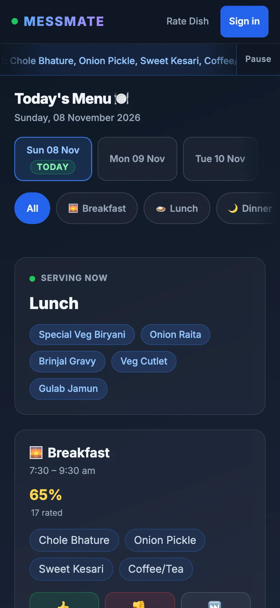
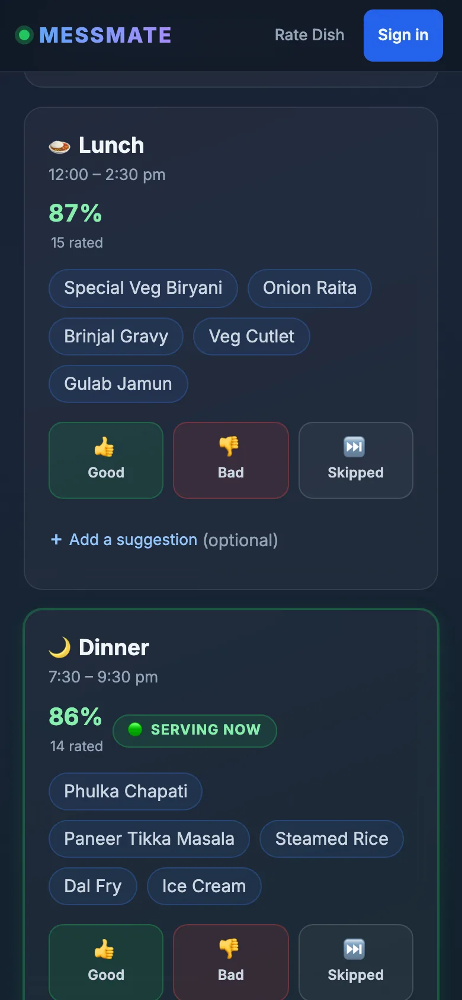
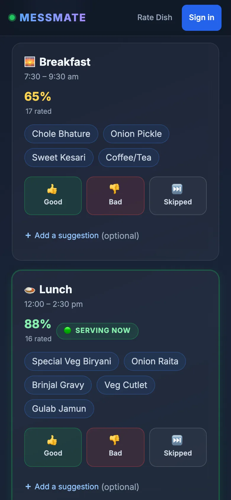
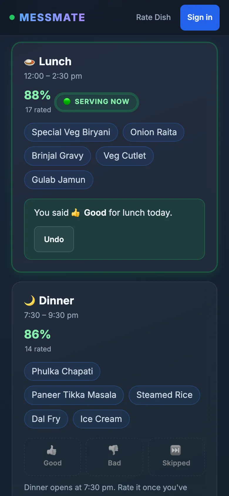
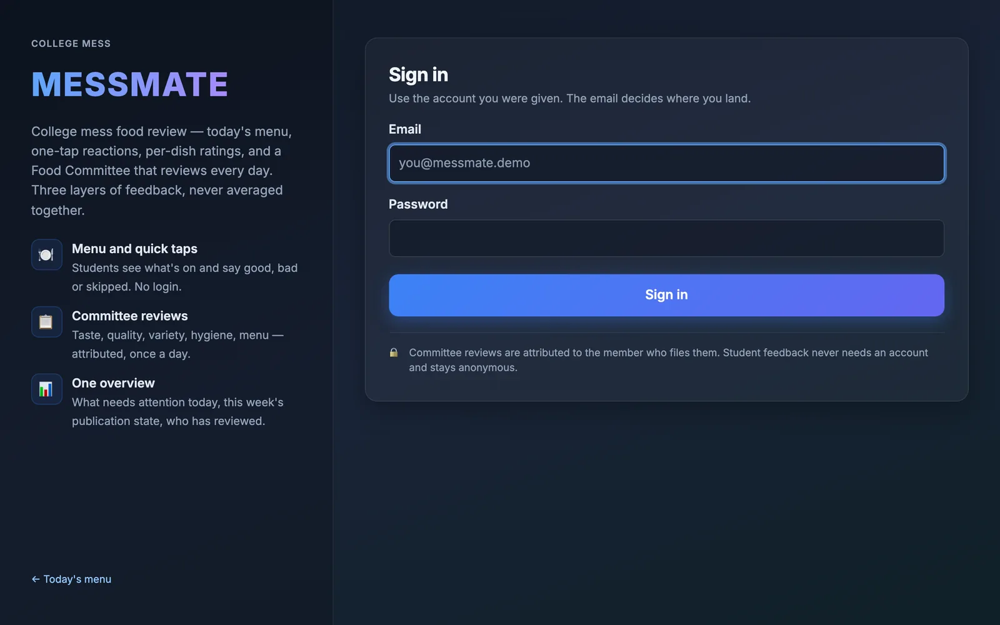
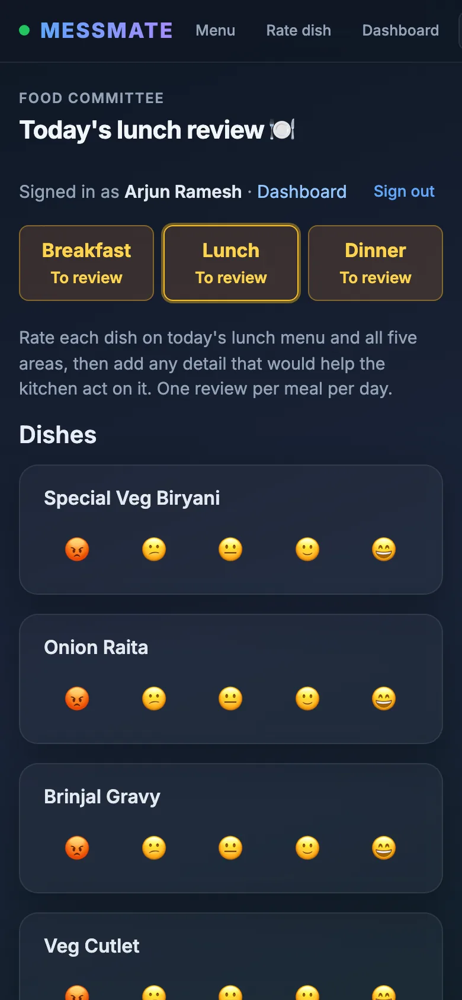
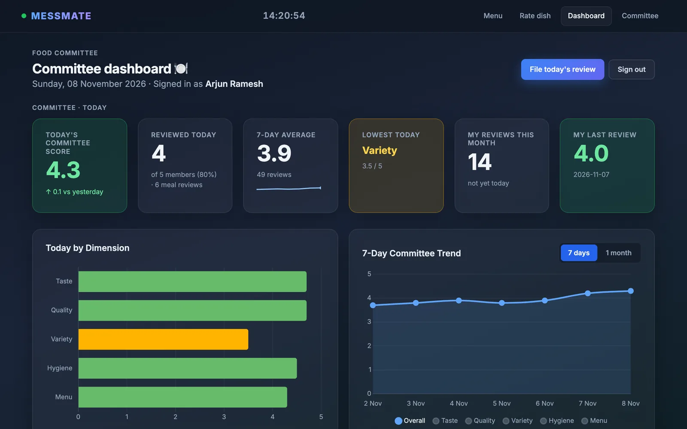
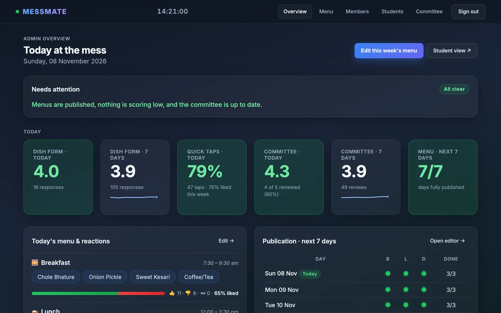
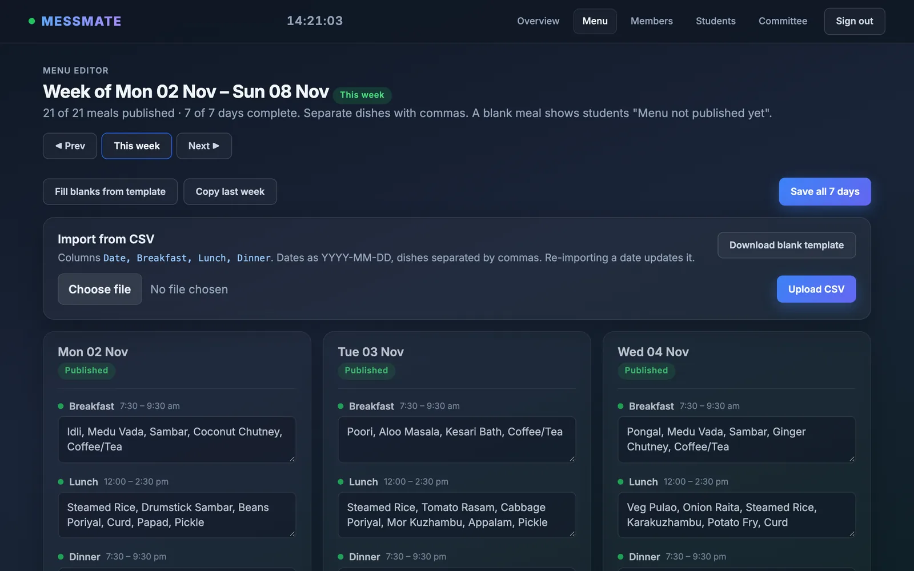
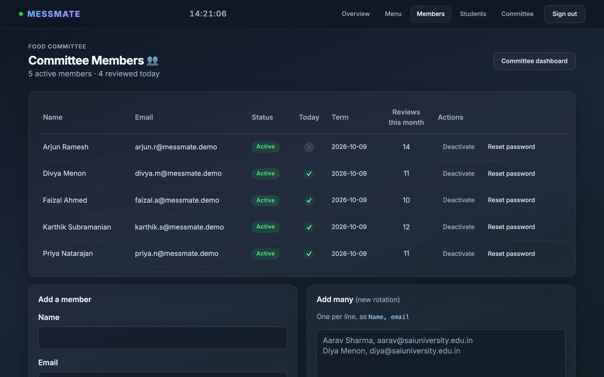

Sign in
Use the email and one-time password the admin gave you, then choose your own.
Pick your part below; each one takes a minute to read.


Every meal with its serving time.

Good, Bad or Skipped, with an optional note.

Undo works for 10 minutes.
Your name is saved with every review you file.
Use the email and one-time password the admin gave you, then choose your own.

Yellow meals still need you. Score each dish and the five areas, then submit.

Your dashboard shows today’s score, the week’s trend and your own reviews.

Sign in as admin. The developer guide covers every screen.


